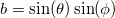

修正平面陰関数
数：3
パラメータの名前:theta, phi, d
意味:theta = unknown, phi = unknown, d=unknown
下側境界: ,
上側境界: ,

nlf_PlaneMod(x,y,z,theta,phi,d)
FITFUNC\PLANEMOD.FDF
Implicit
\cos(\phi)x + \sin(\theta)\sin(\phi)y + \cos(\theta)z + d")

 ,
,